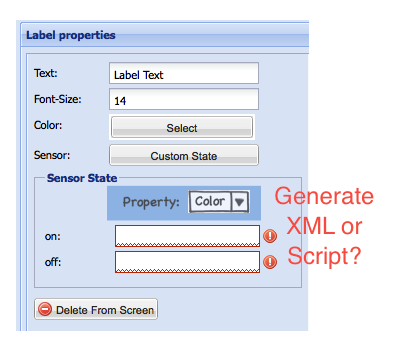

|
This page last changed on Apr 21, 2011 by ebariaux.
In the current version, it is possible to associate a sensor with certain UI elements, such as a label or an image.
The associate is always to the "content" of the UI widget, that is the text of the label of the name of the displayed image.
Could we extend this to a more generic "binding" mechanism where the value of a sensor can drive any (that makes sense) property of the widget?
For instance, the position, the color or text size of a label can be driven by a sensor.
For other elements, such as sliders and switch, the sensor is not directly linked to the UI element.
An intermediate slider or switch "model" is created, already grouping the command(s) for action and the sensor for feedback.
Irrelevant to whether or not this will stay like that in the future, adding generic sensor binding to the other property of a switch or slider widget is also desirable.
I believe this already makes sense today but if we think that down the road we can add other properties (such as enabled for a button or visible for any widget or URL for a web/media rendered widget), then this makes even more sense.
Any thoughts on that?
Could we extend this to a more generic "binding" mechanism where the value of a sensor can drive any (that makes sense) property of the widget?
For instance, the position, the color or text size of a label can be driven by a sensor.
Yes, we do need to add this.

Posted by juha at Apr 21, 2011 16:17
|
|
Looking at how to integrate that in the panel.xml (first, modeler will come after).
Current situation is that a sensor is represented by a <link type="sensor" ref="xxx"> tag. From what I've seen, sensor is the only supported value for type.
Within this tag, it is allowed to have zero or more <state name="xxx" value="yyy"/> tags. This defines some form of mapping between the value reported by the sensor and the value used by the widget.
Zero or one <link> tag can be associated with the <label>, <image>, <switch> and <sliderGroup> element. (The XSD indicates that for <switch>, 2 <link> tags can be provided. This does not seem to be supported by the iOS client and I don't know what the semantics behind having 2 links would be).
As said above, the sensor is always linked to the "content" of the widget, this means:
- label -> text property
- image -> src property
- switch -> no explicit property, on/off state of the switch
- slider -> no explicit property, value of the slider
Simple proposal would be:
add a property attribute on the link tag -> <link type="sensor" ref="xxx" property="text">
allow an unbounded number of <link> tags to be associated with a widget (in fact could be bounded as we know the attributes that would support sensors)
Looking at the above, we would need to define a virtual property name for switch and slider for the link definition.
Does this make sense ? Do we need anything more ?
Posted by ebariaux at Apr 21, 2011 17:04
|
|
Do we need any explicit XML in panel.xml for this? Is the property update mechanism itself something we ever need to expose in UI modeling?
If I have a widget X on screen the http server push can be triggered on the panel towards controller – it is then an implicit property of the UI widget that its properties can be dynamically updated from the controller side, and the properties defined in the modeler are initial default values that are used if nothing else is updated.
Then it's just a matter of providing the needed REST interface on the controller to support the additional data exchange (logically sensor value push and UI widget property push should be separate but in practice we probably want to use single multi-plexed request loop).
Posted by juha at Apr 21, 2011 17:39
|
|
Or in other words, I view UI widget properties purely as 'View' properties, nothing we need to model in panel.xml beyond the fact that a property exists (such as label color) which is already explicit – the update from server side could be implicit.
I may be missing relevant use cases though.
Posted by juha at Apr 21, 2011 17:42
|
|
OK, I see your point, which is a different approach than what I thought about.
Let me first take a simple use case for what I had in mind and see how to implement it.
The installation includes an alarm system. At the controller level, there is a sensor sensor reporting on/off values indicating whether the system is armed or not.
On the panel, I would like a label reading "Armed" (in red) or "Not armed" (in green).
The way I would model that with the above proposition is with this bit of code in panel.xml
<label text="Unknown" id="xxx">
<link type="sensor" id="yyy" property="label">
<state name="on" value="Armed"/>
<state name="off" value="Not armed"/>
</link>
<link type="sensor" id="yyy" property="color">
<state name="on" value="#FF0000"/>
<state name="off" value="#00FF00"/>
</link>
</label>
Now I have to agree that what can be achieved with this "syntax" is limited.
So if I have a temperature sensor with a range -20 to 50 degrees and I want to have the text in blue below 10, green between 10 & 30 and red above 30, this would not work.
Coming back to your thinking, I suppose this requires some sort of scripting/rule (logic) on the controller side. So logic executing on the controller would detect a change in a sensor and decide to push a new value for a dynamic attribute of a panel side widget. This is clearly more powerful but might make the configuration a bit more complex.
In fact, this is very much the way a system such as AMX works. When an event occurs (user pushing button, contact closing, serial string from device ...) some code is triggered on the controller. If a UI change is required, the controller sends a command to the panel such as "change text of button xyz to ..." or "close window xxx" or "change color of all text to ...".
This could be implemented similarly in OR where the controller sends commands to the panel which executes them
A variation on this is that the controller has a proxy to the DOM of the UI on the panel (panels ?) and there is some form of synchronization between them. So in the controller code, I can access a UI label object. I can read/write the color value. If I write a new color value, then a sync mechanism makes sure the color is updated on the panel UI "rendering".
Yet another approach is to have scripting on the panel. So on the panel itself, when the sensor value changes, some code is executed (maybe by defining a listener on the sensor value). This code can access the DOM of the UI and make whatever modification is desired (or navigate or ...). This is very much like what is done with the Pronto, where some Prontoscript can be executed on the panel and access the UI DOM.
Besides the original idea about sensors, I think scripting on the panel side is a nice addition. Having the same scripting language on both controller and panel is even nicer. One caveat is Apple. Must read the guidelines / agreements again to see what is allowed in terms of scripting in a (public AppStore) iOS application.
Posted by ebariaux at Apr 22, 2011 09:06
|
|
Trying to think about this from couple of angles:
<label text="Unknown" id="xxx">
<link type="sensor" id="yyy" property="label">
<state name="on" value="Armed"/>
<state name="off" value="Not armed"/>
</link>
<link type="sensor" id="yyy" property="color">
<state name="on" value="#FF0000"/>
<state name="off" value="#00FF00"/>
</link>
</label>
This is a valid approach although won't be complete as you pointed out. It raises a few observations:
- It works for sensors that have a clearly defined finite state.
- It does make the functionality of the system explicit in XML – initially I thought this might not be necessary but thinking about it, may become useful in terms of helping automation of analytics / diagnostics of what occurs in the system which will be more difficult if needs to be gleaned from scripts.
- The point on configuration complexity I think is moot – see below.
- It won't work for all cases so we will need both this and the scripting mechanism eventually.
- This XML approach seems a lower implementation effort to get started with – it is isolated to panels only (but obviously all panels need to be in sync which is true for both approaches)
And it raises a couple of points:
- A UI widget may potentially be bound to multiple sensors – wasn't explicit in your example which was using the same sensor ID for both cases so not sure if you already considered this or not.
- Once we have multiple properties, then a sensor per property becomes a valid use-case
- Going further into more complex cases, multiple sensors per property may not be far fetched either (if one of three alarms goes off, change to red). This is now integration of sensors in the panel UI (so far we've integrated commands / macros).
- We may leave the more complex cases to scripting although to be honest once that is in place, it's likely that effort is directed elsewhere (which will undermine the benefit of being explicit in the XML configuration, and one could argue why then not leave all to scripting in the first place?)
- This may not be a huge change in the panel implementation (haven't looked), may just require adding an additional ID in the update loop.
On configuration:

Looking at this from the tooling point of view, whether we generate XML documents or scripts / rules makes little difference as both are hidden from users – solely relying on scripting would increase complexity of configuration a little but only for those who work directly on XML files which I don't think is a valid use case.
So initially I viewed this as an argument to create scripts even for the simple cases. However, having some of them explicitly declared in XML model instead of having to parse scripts in an attempt to figure out the same may become useful for some areas (but what those might be are still fuzzy), in that sense the XML model is appealing (ease of parsing).
Posted by admin at Apr 23, 2011 11:36
|
Coming back to your thinking, I suppose this requires some sort of scripting/rule (logic) on the controller side. So logic executing on the controller would detect a change in a sensor and decide to push a new value for a dynamic attribute of a panel side widget. This is clearly more powerful but might make the configuration a bit more complex.
Yes, I was approaching this from controller scripting point of view as I thought about it when putting the first rules and event processors in place into the controller.
It will require us to build an object model of what the panels contain in the controller (which today is defined in the panel.xml) – in this sense we would now have an object model based on both controller.xml and panel.xml in the controller which in itself is a good enough reason to get rid of the current physical separation of XML files (panel.xml + controller.xml) and have one XML document as the controller model and the current panel XML schema expected by panels generated in memory as required.
Initially I thought of view property update being implicit in the system (driven by rules / scripts) but actually having some of them declared explicitly in the model may have some additional benefits – whether those will actually realize is still unclear which in the strictest sense would be an argument not to spend effort on it until the use cases are concrete.
A variation on this is that the controller has a proxy to the DOM of the UI on the panel (panels ?) and there is some form of synchronization between them. So in the controller code, I can access a UI label object. I can read/write the color value. If I write a new color value, then a sync mechanism makes sure the color is updated on the panel UI "rendering".
Yes, was considering this variation initially.
Posted by admin at Apr 23, 2011 11:48
|
Yet another approach is to have scripting on the panel.
Yes. This however is a larger feature in context than the update of UI based on sensor values that we originally discussed here.
So obviously we have a couple of approaches we could utilize in terms of updating panel UI definitions in response to a device state (sensor) change. You're right that one of them could be to execute a panel (client-) side script in response to a state change.
However, panel-side scripting is a larger feature in a sense that it can be used also to modify UI state in response to user interaction in addition to device state changes – i.e. change the UI model based on navigation and other user events (parallel to jQuery in web dev). This enables view oriented panel designs in addition to the current screen oriented designs.
Having the same scripting language on both controller and panel is even nicer. One caveat is Apple.
Indeed. To be clear, we will have panel-side scripting at some point, the utility and priority is clear. Regardless of how it can (or cannot) be supported in the limited universe of iOS which in this case is secondary.
Posted by juha at Apr 23, 2011 12:08
|
1. A UI widget may potentially be bound to multiple sensors - wasn't explicit in your example which was using the same sensor ID for both cases so not sure if you already considered this or not.
I had not considered it but I don't see this having any impact. IIRC polling in the console is done for all sensors present on the screen in 1 call. On return, notifications are posted for all values that changed and the widgets update as they listen to notifications.
It works for sensors that have a clearly defined finite state.
Going further into more complex cases, multiple sensors per property may not be far fetched either (if one of three alarms goes off, change to red). This is now integration of sensors in the panel UI (so far we've integrated commands / macros).
These are things I wanted to avoid in this simpler approach. Going down that path, I believe you end up re-implementing a complex language / system to support all the use cases that you want and then you're much better with using the scripting approach that should cover all cases.
We may leave the more complex cases to scripting although to be honest once that is in place, it's likely that effort is directed elsewhere (which will undermine the benefit of being explicit in the XML configuration, and one could argue why then not leave all to scripting in the first place?)
After reading this thread, I do believe that the scripting model is the way to go for the future and that the initial idea I had in mind would only be valuable if there is any "time to market" pressure to have a basic support for this in.
So we should maybe further discuss the implementation of the functionality with server side scripting and see how big of a work it is?
Posted by ebariaux at Apr 26, 2011 09:43
|
|
{kind=link}